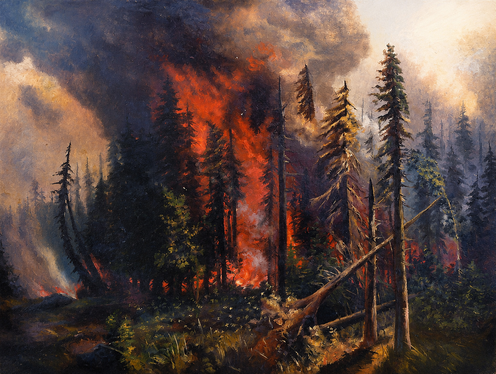

i hope you like nature as much as i do
2026-06-23

As of writing this post we currently have record-breaking heatwaves in Europe. It animates people to think about climate, because right now, it's getting really unbearable. And we're not close to temperature convergence.
This is actually a fact that makes me optimistic about the future of nature. The change is rapid, people feel it harshly, and that's good. It seems that's what our politicians and greedy companies, that don't provide any benefit (mostly rent-seekers), need to feel before moving into a pro-nature position.
We are late to solve this problem, and a lot of ecosystems will never recover from the damages done right now. But it is not over. We can still minimize the damage and ultimately minimize large-scale extinction of human and other animal life.
So what can you do to help?
At a first glance, it seems hopeless to act as an individual. But right now, with the sensation of how much heat actually damages our surroundings, we will see a massive surge of people wanting to get more active. I can guarantee you, a devastating forest fire near a city will tune it's inhabitants to pro-climate actions. More people will knowingly choose more climate friendly options. That's exactly what's needed.
- Vote and talk to peers. The biggest climate decisions are made in parliaments, city councils, universities, transportation companies, zoning laws, energy grids, and cafeteria menus. Vote for people who make nature protection practical. Talk about climate without turning into a preacher. Take the train, repair things, buy less garbage, eat less beef, and make those choices normal around you. Take your friends on hikes, especially those who turned climate into a culture war topic. People only protect what they know.
- Consume mindfully. Buy less. Buy better. Repair more. Keep things longer. Hyperconsumerism should be embarrassing. Joy is good, but buying disposable junk from the other side of the planet to feel something for five minutes is pathetic. Temu, AliExpress, Amazon, Zalando, fast fashion, endless gadgets... The companies are not the only problem. The addiction loop is too.
- Use better transportation. Flying should not be casual. Inside Europe, take trains when possible. In daily life, use public transport, walk, or bike. Take the bike to buy groceries. Take the bike to work. A lot of climate action is boring and obvious, which is good. But boring and obvious things scale.
- Change your daily defaults. Eat less beef and lamb. Waste less food. Heat rooms less aggressively. Wash cold. Choose renewable electricity if you can. Do not perform purity. Just make the cleaner option your standard option. The goal is to live in a way where damaging nature feels unnecessary and stupid.
And here is what you need to be concerned about if you are a politician or founder (or want to become one).
- Build public transport and bike infrastructure properly. Public transport should be punctual, dense, cheap, clean, safe, and frequent. Bike infrastructure should be continuous and protected, not a painted line next to car traffic. Sweden and Netherlands are amazing at bike infrastructure, let's do more of that across the continent. Switzerland has good public transport, but it is too expensive and too crowded. Much of Europe is cheaper, but unreliable or badly connected. Build the middle ground: High punctuality, affordable tickets, enough capacity, and networks people can actually rely on.
- Expand rail without destroying nature. More rail is good. More rail done stupidly is not. Build dense networks, night trains, easy international ticketing, and enough capacity for normal people to choose trains over planes. But route them carefully. Use tunnels where needed, wildlife corridors, quiet tracks, and proper ecosystem planning. Do not wound nature in the name of saving it.
- Kill hyperconsumerism at the root. Regulate junk production, planned obsolescence, fake discounts, wasteful returns, destruction of unsold goods, and platforms that make disposable buying feel like entertainment. If you want to be a founder, build durable, useful, repairable things. Do not build dopamine traps with cardboard packaging.
- Make low-carbon food actually good. Beef and lamb are terrible for the climate. Vegetarian defaults should be cheaper, tastier, more nutritious, and easier to find. Most meat alternatives still suck, which is a huge founder opportunity. Make the better option delicious. People change faster when the alternative isn't a punishment.
- Replace plastic. Plastic may be practical, but practicality is not innocence. It pollutes oceans, enters bodies, lingers for absurd amounts of time, and turns convenience into contamination. Humanity needs cheap, scalable, renewable, safe packaging that does not poison the planet after being useful for ten minutes. Plastic is humanity’s worst invention, sadly still too practical and cheap for now.
- Clean energy and clean heating should be normal. Build more renewable energy, better grids, better storage, better insulation, and heat pumps. Stop making people fight bureaucracy for obvious upgrades. A warm home should not require burning the future. Also, nuclear energy is still an incredibly good technology. I don't get why we started to abandon it in the past decade. This tech has huge energy output for its tiny land footprint. The waste is minimal and we can get rid of it without hurting ecosystems, we have existing role models for this.
The key as a founder and politician is to push for low-carbon options and make them normal. Being good to nature should not feel like being a loud activist, you should not even feel the need to tell your surroundings about the dozens of measures you implement to be carbon neutral. It just needs to become the default path of least resistance.
Lastly, trust your species. I think humans are still fundamentally good and interested in solving this mess. Innovation is actually accelerating rapidly for more climate-friendly technologies. And these innovations are cheaper than their carbonizing alternatives, so it even makes sense for polluters to switch to those.